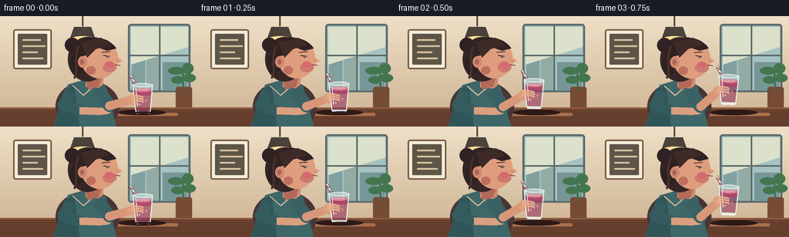
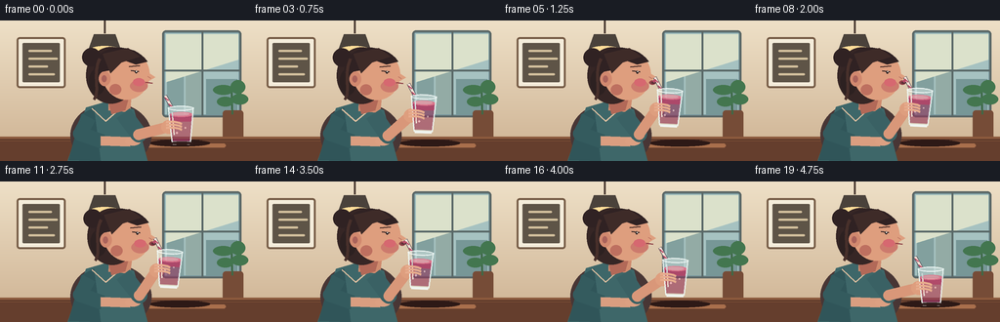

CODING AGENTS AS PIXEL WORLD MODELS
traex/GPT-5.6-Sol · motion_rationality_0025
点击播放 · 原生 RGB 像素
逐轮保存的候选
回放视频、检查图与代码变化。
每份候选均可单独播放。实际图片检查记录在下方工具轨迹中。
候选 01播放与检查图
点击播放 · 原生 RGB 像素


展开代码变化
--- 上一保存版本
+++ 本次保存版本
@@ -0,0 +1,244 @@
+from pathlib import Path
+import math
+import numpy as np
+from PIL import Image, ImageDraw, ImageFilter
+import artifact_io
+
+# Stylized, hand-built 2-D animation. Everything is rendered at 3x and reduced
+# for clean antialiasing.
+W, H, N = 256, 144, 20
+S = 3
+
+def sc(v):
+ if isinstance(v, (tuple, list)):
+ return tuple(int(round(x*S)) for x in v)
+ return int(round(v*S))
+
+def smooth(x):
+ x = max(0.0, min(1.0, x))
+ return x*x*(3-2*x)
+
+def ellipse(d, box, fill, outline=None, width=1):
+ d.ellipse(sc(box), fill=fill, outline=outline, width=sc(width) if outline else 1)
+
+def line(d, pts, fill, width, joint='curve'):
+ d.line([sc(p) for p in pts], fill=fill, width=sc(width), joint=joint)
+
+def poly(d, pts, fill):
+ d.polygon([sc(p) for p in pts], fill=fill)
+
+def rr(d, box, radius, fill, outline=None, width=1):
+ d.rounded_rectangle(sc(box), radius=sc(radius), fill=fill, outline=outline,
+ width=sc(width) if outline else 1)
+
+def bezier_points(p0, p1, p2, p3, count=18):
+ out=[]
+ for t in np.linspace(0,1,count):
+ u=1-t
+ out.append((u**3*p0[0]+3*u*u*t*p1[0]+3*u*t*t*p2[0]+t**3*p3[0],
+ u**3*p0[1]+3*u*u*t*p1[1]+3*u*t*t*p2[1]+t**3*p3[1]))
+ return out
+
+def background():
+ # warm cafe wall gradient
+ yy = np.linspace(0,1,H*S)[:,None,None]
+ top=np.array([238,224,199],dtype=float)[None,None,:]
+ bot=np.array([205,177,145],dtype=float)[None,None,:]
+ arr=np.tile(top*(1-yy)+bot*yy,(1,W*S,1)).astype(np.uint8)
+ im=Image.fromarray(arr,'RGB').convert('RGBA')
+ d=ImageDraw.Draw(im,'RGBA')
+ # large window and morning sky
+ rr(d,(166,10,247,99),4,(116,147,154,255),(91,103,102,255),2)
+ # soft sky panes
+ d.rectangle(sc((169,13,244,96)), fill=(166,194,193,255))
+ # distant abstract buildings
+ d.rectangle(sc((171,55,188,96)), fill=(130,160,158,255))
+ d.rectangle(sc((190,45,208,96)), fill=(147,171,165,255))
+ d.rectangle(sc((211,60,243,96)), fill=(119,151,151,255))
+ # window glow
+ poly(d,[(170,14),(244,14),(244,40),(170,63)],(219,225,203,90))
+ line(d,[(207,12),(207,97)],(90,105,104,255),2)
+ line(d,[(168,51),(245,51)],(90,105,104,255),2)
+ # wall picture/menu
+ rr(d,(17,17,67,69),3,(244,236,218,255),(118,92,70,255),2)
+ rr(d,(23,23,61,63),1,(94,84,71,255))
+ for y,w in [(30,24),(38,30),(46,20),(54,27)]:
+ rr(d,(29,y,29+w,y+2),1,(211,192,157,220))
+ # pendant lamp
+ line(d,[(107,0),(107,13)],(77,61,52,255),2)
+ poly(d,[(96,14),(118,14),(124,31),(90,31)],(74,66,59,255))
+ ellipse(d,(92,26,122,34),(255,221,153,180))
+ # plant at right
+ rr(d,(228,92,249,121),3,(118,76,55,255))
+ line(d,[(238,96),(237,68)],(61,104,70,255),2)
+ for box,ang in [((218,66,239,76),0),((236,61,251,75),0),((222,78,239,88),0),((237,75,254,86),0)]:
+ ellipse(d,box,(67,118,79,255))
+ # table and edge
+ d.rectangle(sc((0,119,256,144)),fill=(101,62,45,255))
+ d.rectangle(sc((0,119,256,123)),fill=(139,89,61,255))
+ line(d,[(0,122),(256,122)],(72,43,34,160),1)
+ # soft reflected highlight
+ rr(d,(150,126,231,130),2,(169,111,76,65))
+ return im
+
+BG = background()
+
+def solve_elbow(shoulder, hand, upper=27, fore=31):
+ x1,y1=shoulder; x2,y2=hand
+ dx,dy=x2-x1,y2-y1
+ dist=max(1e-3,math.hypot(dx,dy))
+ dist=min(dist,upper+fore-0.01)
+ a=(upper*upper-fore*fore+dist*dist)/(2*dist)
+ h=math.sqrt(max(0,upper*upper-a*a))
+ px=x1+a*dx/dist; py=y1+a*dy/dist
+ # choose the downward bend, appropriate for a seated arm
+ c1=(px-dy/dist*h, py+dx/dist*h)
+ c2=(px+dy/dist*h, py-dx/dist*h)
+ return c1 if c1[1] >= c2[1] else c2
+
+def glass_sprite(fill_level, sip_phase, angle):
+ # local coordinates: glass center is (30,45), straw tip is near (14,15)
+ tw,th=62,76
+ im=Image.new('RGBA',sc((tw,th)),(0,0,0,0))
+ d=ImageDraw.Draw(im,'RGBA')
+ # straw shadow + striped straw
+ line(d,[(30,43),(14,15)],(71,61,75,190),4)
+ line(d,[(30,43),(14,15)],(246,229,215,255),2.4)
+ # berry stripes along straw
+ for a in [0.18,0.42,0.66,0.88]:
+ x=30+(14-30)*a; y=43+(15-43)*a
+ line(d,[(x-1.8,y-1.2),(x+1.4,y+1.6)],(187,74,102,255),1.2)
+ # subtle glass drop shadow
+ poly(d,[(18,28),(42,28),(39,64),(22,64)],(34,28,33,35))
+ # transparent bowl silhouette
+ poly(d,[(17,27),(43,27),(40,63),(21,63)],(224,240,237,92))
+ # smoothie body; level is y coordinate of top
+ top_y = 31 + (1-fill_level)*12
+ poly(d,[(18.5,top_y),(41.5,top_y),(39.5,61.5),(21.5,61.5)],(175,69,104,245))
+ # gradient-like bands in smoothie
+ poly(d,[(19.2,top_y+8),(40.8,top_y+8),(39.5,61.5),(21.5,61.5)],(146,52,91,150))
+ ellipse(d,(19,top_y-2,42,top_y+3),(218,117,139,255))
+ # foam and two highlights/bubbles
+ ellipse(d,(21,top_y-1.6,39,top_y+1.8),(236,157,169,210))
+ bubble_shift=(sip_phase*9)%7
+ ellipse(d,(25,52-bubble_shift,27,54-bubble_shift),(244,174,188,180))
+ ellipse(d,(34,47-(bubble_shift*.6),35.5,48.5-(bubble_shift*.6)),(245,182,193,170))
+ # glass outline and rim
+ line(d,[(17,27),(21,63),(40,63),(43,27)],(238,249,246,225),1.4)
+ ellipse(d,(17,25.5,43,30.2),(232,247,245,115),(248,255,253,235),1)
+ # glass highlight and base
+ line(d,[(21,32),(23,55)],(255,255,255,150),1.2)
+ line(d,[(22,64),(39,64)],(244,252,249,230),2)
+ # rotate around sprite center very slightly
+ if abs(angle)>0.01:
+ im=im.rotate(angle,Image.Resampling.BICUBIC,center=sc((30,45)))
+ return im
+
+def draw_frame(i):
+ im=BG.copy()
+ d=ImageDraw.Draw(im,'RGBA')
+ # motion: raise, drink, lower
+ if i <= 5:
+ q=smooth(i/5)
+ elif i <= 13:
+ q=1.0
+ else:
+ q=1-smooth((i-13)/6)
+ sipping=max(0,min(1,(i-5)/8))
+ # a nearly imperceptible breathing motion and natural sipping bob
+ breath=math.sin(i*math.pi/5)*0.6
+ bob=(math.sin((i-5)*math.pi/2)*0.45 if 6<=i<=13 else 0)
+ gcx=185+(173-185)*q
+ gcy=107+(89-107)*q+bob
+ angle=-3.0*q
+ head_dx=1.2*q
+ head_dy=0.3*q
+ # cast shadows on tabletop
+ ellipse(d,(153,122,215,129),(45,25,22,60))
+ # body shadow
+ ellipse(d,(72,84+breath,155,151),(72,54,53,80))
+ # torso and blouse
+ poly(d,[(88,89+breath),(112,82+breath),(137,91+breath),(151,144),(69,144)],(62,103,105,255))
+ # blouse shading and neckline
+ poly(d,[(70,143),(83,96),(96,89),(103,144)],(48,85,89,170))
+ line(d,[(94,90+breath),(108,103),(124,89+breath)],(220,190,159,160),1.5)
+ # left arm resting on table for grounded pose
+ line(d,[(91,99),(82,116),(105,124)],(52,91,94,255),15)
+ line(d,[(103,123),(133,124)],(218,158,128,255),10)
+ ellipse(d,(128,119,144,128),(220,160,130,255))
+ # neck
+ poly(d,[(111+head_dx,70+head_dy),(135+head_dx,70+head_dy),(133,94+breath),(111,92+breath)],(207,139,110,255))
+ poly(d,[(111,83),(132,78),(128,92),(114,96)],(178,105,88,120))
+ # back hair mass and bun
+ ellipse(d,(88+head_dx,27+head_dy,139+head_dx,85+head_dy),(54,38,37,255))
+ ellipse(d,(84+head_dx,28+head_dy,103+head_dx,47+head_dy),(48,34,35,255))
+ ellipse(d,(91+head_dx,49+head_dy,108+head_dx,76+head_dy),(45,33,33,255))
+ # face with profile towards the drink
+ ellipse(d,(105+head_dx,30+head_dy,153+head_dx,81+head_dy),(222,158,126,255))
+ # nose profile
+ poly(d,[(147+head_dx,50+head_dy),(159+head_dx,58+head_dy),(150+head_dx,63+head_dy),(145+head_dx,61+head_dy)],(222,158,126,255))
+ # face warm shadows
+ ellipse(d,(133+head_dx,61+head_dy,151+head_dx,73+head_dy),(204,122,109,72))
+ ellipse(d,(112+head_dx,65+head_dy,124+head_dx,76+head_dy),(190,112,96,60))
+ # ear
+ ellipse(d,(101+head_dx,52+head_dy,113+head_dx,67+head_dy),(209,137,111,255))
+ ellipse(d,(104+head_dx,56+head_dy,109+head_dx,63+head_dy),(170,99,91,150))
+ # hair cap and side sweep
+ pts=bezier_points((96+head_dx,49),(97+head_dx,24),(136+head_dx,20),(151+head_dx,42),18)
+ poly(d,[(96+head_dx,54)]+pts+[(139+head_dx,45),(125+head_dx,40),(112+head_dx,51)],(48,34,35,255))
+ poly(d,[(105+head_dx,34),(131+head_dx,28),(143+head_dx,37),(124+head_dx,43),(113+head_dx,54)],(62,43,40,255))
+ # loose lock
+ line(d,bezier_points((102+head_dx,39),(94+head_dx,56),(103+head_dx,71),(96+head_dx,81)),(72,48,43,255),3)
+ # brow
+ line(d,[(132+head_dx,47+head_dy),(143+head_dx,46+head_dy)],(70,44,40,255),1.5)
+ # eye, one relaxed blink midway through sip
+ blink = i in (9,10)
+ if blink:
+ line(d,[(134+head_dx,52+head_dy),(142+head_dx,53+head_dy)],(59,43,42,255),1.2)
+ else:
+ line(d,[(134+head_dx,51+head_dy),(142+head_dx,52+head_dy)],(58,42,41,255),1.2)
+ ellipse(d,(138+head_dx,51+head_dy,140.5+head_dx,54+head_dy),(44,35,35,255))
+ ellipse(d,(139+head_dx,51.5+head_dy,140+head_dx,52.5+head_dy),(255,250,240,220))
+ # nose accent
+ line(d,[(151+head_dx,57+head_dy),(154+head_dx,59+head_dy)],(177,103,91,150),0.8)
+ # cheek blush
+ ellipse(d,(136+head_dx,59+head_dy,148+head_dx,67+head_dy),(214,104,112,45))
+ # lips purse toward straw when raised
+ mouth_y=63+head_dy
+ if q>0.75:
+ ellipse(d,(151.5+head_dx,mouth_y-1.8,158+head_dx,mouth_y+2.5),(146,66,73,255))
+ ellipse(d,(153.5+head_dx,mouth_y-.5,158.5+head_dx,mouth_y+1.2),(90,46,53,255))
+ else:
+ line(d,[(149+head_dx,mouth_y),(156+head_dx,mouth_y+1)],(139,61,68,255),1.4)
+ # shoulder/animated drinking arm, computed as a two-joint chain
+ shoulder=(126,95+breath)
+ hand=(gcx-13,gcy+2)
+ elbow=solve_elbow(shoulder,hand)
+ # upper sleeve then skin forearm, all behind the glass
+ line(d,[shoulder,elbow],(58,97,100,255),17)
+ ellipse(d,(elbow[0]-8,elbow[1]-8,elbow[0]+8,elbow[1]+8),(58,97,100,255))
+ line(d,[elbow,hand],(217,151,121,255),11)
+ ellipse(d,(elbow[0]-5.5,elbow[1]-5.5,elbow[0]+5.5,elbow[1]+5.5),(217,151,121,255))
+ # palm behind glass
+ ellipse(d,(hand[0]-7,hand[1]-7,hand[0]+8,hand[1]+7),(222,158,126,255))
+ # glass + straw, local center at (30,45)
+ fill_level=.78-.18*sipping
+ spr=glass_sprite(fill_level,sipping,angle)
+ paste_x=int(round((gcx-30)*S)); paste_y=int(round((gcy-45)*S))
+ im.alpha_composite(spr,(paste_x,paste_y))
+ d=ImageDraw.Draw(im,'RGBA')
+ # fingers wrapping around front of the glass
+ for off in (-3,0,3):
+ pts=bezier_points((gcx-15,gcy+off),(gcx-8,gcy+off-1),(gcx-3,gcy+off),(gcx+1,gcy+off+2),10)
+ line(d,pts,(231,172,141,255),2.3)
+ # small smoothie spot on straw at lips emphasizes contact during sip
+ if q>.92:
+ ellipse(d,(155.2+head_dx,60.5+head_dy,158.2+head_dx,63.2+head_dy),(183,75,102,230))
+ # delicate glass/contact shadow when set down
+ if q<.12:
+ ellipse(d,(174,124,198,127),(50,29,27,65))
+ # downsample with high quality
+ return np.asarray(im.convert('RGB').resize((W,H),Image.Resampling.LANCZOS),dtype=np.uint8)
+
+frames=np.stack([draw_frame(i) for i in range(N)],axis=0)
+artifact_io.save(frames,Path(__file__).resolve().parent)
可观测工具轨迹
实际执行的命令与返回图片。
命令 1exit 0
/bin/bash -lc "ls -la && printf '\\n--- prompt.txt ---\\n' && cat prompt.txt && printf '\\n--- GENERATION_RULES.md ---\\n' && cat GENERATION_RULES.md && printf '\\n--- task_spec.json ---\\n' && cat task_spec.json"
命令 2exit 0
/bin/bash -lc "sed -n '1,260p' artifact_io.py"
命令 3exit 0
/bin/bash -lc "cat > generate.py <<'PY'
from pathlib import Path
import math
import numpy as np
from PIL import Image, ImageDraw, ImageFilter
import artifact_io
# Stylized, hand-built 2-D animation. Everything is rendered at 3x and reduced
# for clean antialiasing.
W, H, N = 256, 144, 20
S = 3
def sc(v):
if isinstance(v, (tuple, list)):
return tuple(int(round(x*S)) for x in v)
return int(round(v*S))
def smooth(x):
x = max(0.0, min(1.0, x))
return x*x*(3-2*x)
def ellipse(d, box, fill, outline=None, width=1):
d.ellipse(sc(box), fill=fill, outline=outline, width=sc(width) if outline else 1)
def line(d, pts, fill, width, joint='curve'):
d.line([sc(p) for p in pts], fill=fill, width=sc(width), joint=joint)
def poly(d, pts, fill):
d.polygon([sc(p) for p in pts], fill=fill)
def rr(d, box, radius, fill, outline=None, width=1):
d.rounded_rectangle(sc(box), radius=sc(radius), fill=fill, outline=outline,
width=sc(width) if outline else 1)
def bezier_points(p0, p1, p2, p3, count=18):
out=[]
for t in np.linspace(0,1,count):
u=1-t
out.append((u**3*p0[0]+3*u*u*t*p1[0]+3*u*t*t*p2[0]+t**3*p3[0],
u**3*p0[1]+3*u*u*t*p1[1]+3*u*t*t*p2[1]+t**3*p3[1]))
return out
def background():
# warm cafe wall gradient
yy = np.linspace(0,1,H*S)[:,None,None]
top=np.array([238,224,199],dtype=float)[None,None,:]
bot=np.array([205,177,145],dtype=float)[None,None,:]
arr=np.tile(top*(1-yy)+bot*yy,(1,W*S,1)).astype(np.uint8)
im=Image.fromarray(arr,'RGB').convert('RGBA')
d=ImageDraw.Draw(im,'RGBA')
# large window and morning sky
rr(d,(166,10,247,99),4,(116,147,154,255),(91,103,102,255),2)
# soft sky panes
d.rectangle(sc((169,13,244,96)), fill=(166,194,193,255))
# distant abstract buildings
d.rectangle(sc((171,55,188,96)), fill=(130,160,158,255))
d.rectangle(sc((190,45,208,96)), fill=(147,171,165,255))
d.rectangle(sc((211,60,243,96)), fill=(119,151,151,255))
# window glow
poly(d,[(170,14),(244,14),(244,40),(170,63)],(219,225,203,90))
line(d,[(207,12),(207,97)],(90,105,104,255),2)
line(d,[(168,51),(245,51)],(90,105,104,255),2)
# wall picture/menu
rr(d,(17,17,67,69),3,(244,236,218,255),(118,92,70,255),2)
rr(d,(23,23,61,63),1,(94,84,71,255))
for y,w in [(30,24),(38,30),(46,20),(54,27)]:
rr(d,(29,y,29+w,y+2),1,(211,192,157,220))
# pendant lamp
line(d,[(107,0),(107,13)],(77,61,52,255),2)
poly(d,[(96,14),(118,14),(124,31),(90,31)],(74,66,59,255))
ellipse(d,(92,26,122,34),(255,221,153,180))
# plant at right
rr(d,(228,92,249,121),3,(118,76,55,255))
line(d,[(238,96),(237,68)],(61,104,70,255),2)
for box,ang in [((218,66,239,76),0),((236,61,251,75),0),((222,78,239,88),0),((237,75,254,86),0)]:
ellipse(d,box,(67,118,79,255))
# table and edge
d.rectangle(sc((0,119,256,144)),fill=(101,62,45,255))
d.rectangle(sc((0,119,256,123)),fill=(139,89,61,255))
line(d,[(0,122),(256,122)],(72,43,34,160),1)
# soft reflected highlight
rr(d,(150,126,231,130),2,(169,111,76,65))
return im
BG = background()
def solve_elbow(shoulder, hand, upper=27, fore=31):
x1,y1=shoulder; x2,y2=hand
dx,dy=x2-x1,y2-y1
dist=max(1e-3,math.hypot(dx,dy))
dist=min(dist,upper+fore-0.01)
a=(upper*upper-fore*fore+dist*dist)/(2*dist)
h=math.sqrt(max(0,upper*upper-a*a))
px=x1+a*dx/dist; py=y1+a*dy/dist
# choose the downward bend, appropriate for a seated arm
c1=(px-dy/dist*h, py+dx/dist*h)
c2=(px+dy/dist*h, py-dx/dist*h)
return c1 if c1[1] >= c2[1] else c2
def glass_sprite(fill_level, sip_phase, angle):
# local coordinates: glass center is (30,45), straw tip is near (14,15)
tw,th=62,76
im=Image.new('RGBA',sc((tw,th)),(0,0,0,0))
d=ImageDraw.Draw(im,'RGBA')
# straw shadow + striped straw
line(d,[(30,43),(14,15)],(71,61,75,190),4)
line(d,[(30,43),(14,15)],(246,229,215,255),2.4)
# berry stripes along straw
for a in [0.18,0.42,0.66,0.88]:
x=30+(14-30)*a; y=43+(15-43)*a
line(d,[(x-1.8,y-1.2),(x+1.4,y+1.6)],(187,74,102,255),1.2)
# subtle glass drop shadow
poly(d,[(18,28),(42,28),(39,64),(22,64)],(34,28,33,35))
# transparent bowl silhouette
poly(d,[(17,27),(43,27),(40,63),(21,63)],(224,240,237,92))
# smoothie body; level is y coordinate of top
top_y = 31 + (1-fill_level)*12
poly(d,[(18.5,top_y),(41.5,top_y),(39.5,61.5),(21.5,61.5)],(175,69,104,245))
# gradient-like bands in smoothie
poly(d,[(19.2,top_y+8),(40.8,top_y+8),(39.5,61.5),(21.5,61.5)],(146,52,91,150))
ellipse(d,(19,top_y-2,42,top_y+3),(218,117,139,255))
# foam and two highlights/bubbles
ellipse(d,(21,top_y-1.6,39,top_y+1.8),(236,157,169,210))
bubble_shift=(sip_phase*9)%7
ellipse(d,(25,52-bubble_shift,27,54-bubble_shift),(244,174,188,180))
ellipse(d,(34,47-(bubble_shift*.6),35.5,48.5-(bubble_shift*.6)),(245,182,193,170))
# glass outline and rim
line(d,[(17,27),(21,63),(40,63),(43,27)],(238,249,246,225),1.4)
ellipse(d,(17,25.5,43,30.2),(232,247,245,115),(248,255,253,235),1)
# glass highlight and base
line(d,[(21,32),(23,55)],(255,255,255,150),1.2)
line(d,[(22,64),(39,64)],(244,252,249,230),2)
# rotate around sprite center very slightly
if abs(angle)>0.01:
im=im.rotate(angle,Image.Resampling.BICUBIC,center=sc((30,45)))
return im
def draw_frame(i):
im=BG.copy()
d=ImageDraw.Draw(im,'RGBA')
# motion: raise, drink, lower
if i <= 5:
q=smooth(i/5)
elif i <= 13:
q=1.0
else:
q=1-smooth((i-13)/6)
sipping=max(0,min(1,(i-5)/8))
# a nearly imperceptible breathing motion and natural sipping bob
breath=math.sin(i*math.pi/5)*0.6
bob=(math.sin((i-5)*math.pi/2)*0.45 if 6<=i<=13 else 0)
gcx=185+(173-185)*q
gcy=107+(89-107)*q+bob
angle=-3.0*q
head_dx=1.2*q
head_dy=0.3*q
# cast shadows on tabletop
ellipse(d,(153,122,215,129),(45,25,22,60))
# body shadow
ellipse(d,(72,84+breath,155,151),(72,54,53,80))
# torso and blouse
poly(d,[(88,89+breath),(112,82+breath),(137,91+breath),(151,144),(69,144)],(62,103,105,255))
# blouse shading and neckline
poly(d,[(70,143),(83,96),(96,89),(103,144)],(48,85,89,170))
line(d,[(94,90+breath),(108,103),(124,89+breath)],(220,190,159,160),1.5)
# left arm resting on table for grounded pose
line(d,[(91,99),(82,116),(105,124)],(52,91,94,255),15)
line(d,[(103,123),(133,124)],(218,158,128,255),10)
ellipse(d,(128,119,144,128),(220,160,130,255))
# neck
poly(d,[(111+head_dx,70+head_dy),(135+head_dx,70+head_dy),(133,94+breath),(111,92+breath)],(207,139,110,255))
poly(d,[(111,83),(132,78),(128,92),(114,96)],(178,105,88,120))
# back hair mass and bun
ellipse(d,(88+head_dx,27+head_dy,139+head_dx,85+head_dy),(54,38,37,255))
ellipse(d,(84+head_dx,28+head_dy,103+head_dx,47+head_dy),(48,34,35,255))
ellipse(d,(91+head_dx,49+head_dy,108+head_dx,76+head_dy),(45,33,33,255))
# face with profile towards the drink
ellipse(d,(105+head_dx,30+head_dy,153+head_dx,81+head_dy),(222,158,126,255))
# nose profile
poly(d,[(147+head_dx,50+head_dy),(159+head_dx,58+head_dy),(150+head_dx,63+head_dy),(145+head_dx,61+head_dy)],(222,158,126,255))
# face warm shadows
ellipse(d,(133+head_dx,61+head_dy,151+head_dx,73+head_dy),(204,122,109,72))
ellipse(d,(112+head_dx,65+head_dy,124+head_dx,76+head_dy),(190,112,96,60))
# ear
ellipse(d,(101+head_dx,52+head_dy,113+head_dx,67+head_dy),(209,137,111,255))
ellipse(d,(104+head_dx,56+head_dy,109+head_dx,63+head_dy),(170,99,91,150))
# hair cap and side sweep
pts=bezier_points((96+head_dx,49),(97+head_dx,24),(136+head_dx,20),(151+head_dx,42),18)
poly(d,[(96+head_dx,54)]+pts+[(139+head_dx,45),(125+head_dx,40),(112+head_dx,51)],(48,34,35,255))
poly(d,[(105+head_dx,34),(131+head_dx,28),(143+head_dx,37),(124+head_dx,43),(113+head_dx,54)],(62,43,40,255))
# loose lock
line(d,bezier_points((102+head_dx,39),(94+head_dx,56),(103+head_dx,71),(96+head_dx,81)),(72,48,43,255),3)
# brow
line(d,[(132+head_dx,47+head_dy),(143+head_dx,46+head_dy)],(70,44,40,255),1.5)
# eye, one relaxed blink midway through sip
blink = i in (9,10)
if blink:
line(d,[(134+head_dx,52+head_dy),(142+head_dx,53+head_dy)],(59,43,42,255),1.2)
else:
line(d,[(134+head_dx,51+head_dy),(142+head_dx,52+head_dy)],(58,42,41,255),1.2)
ellipse(d,(138+head_dx,51+head_dy,140.5+head_dx,54+head_dy),(44,35,35,255))
ellipse(d,(139+head_dx,51.5+head_dy,140+head_dx,52.5+head_dy),(255,250,240,220))
# nose accent
line(d,[(151+head_dx,57+head_dy),(154+head_dx,59+head_dy)],(177,103,91,150),0.8)
# cheek blush
ellipse(d,(136+head_dx,59+head_dy,148+head_dx,67+head_dy),(214,104,112,45))
# lips purse toward straw when raised
mouth_y=63+head_dy
if q>0.75:
ellipse(d,(151.5+head_dx,mouth_y-1.8,158+head_dx,mouth_y+2.5),(146,66,73,255))
ellipse(d,(153.5+head_dx,mouth_y-.5,158.5+head_dx,mouth_y+1.2),(90,46,53,255))
else:
line(d,[(149+head_dx,mouth_y),(156+head_dx,mouth_y+1)],(139,61,68,255),1.4)
# shoulder/animated drinking arm, computed as a two-joint chain
shoulder=(126,95+breath)
hand=(gcx-13,gcy+2)
elbow=solve_elbow(shoulder,hand)
# upper sleeve then skin forearm, all behind the glass
line(d,[shoulder,elbow],(58,97,100,255),17)
ellipse(d,(elbow[0]-8,elbow[1]-8,elbow[0]+8,elbow[1]+8),(58,97,100,255))
line(d,[elbow,hand],(217,151,121,255),11)
ellipse(d,(elbow[0]-5.5,elbow[1]-5.5,elbow[0]+5.5,elbow[1]+5.5),(217,151,121,255))
# palm behind glass
ellipse(d,(hand[0]-7,hand[1]-7,hand[0]+8,hand[1]+7),(222,158,126,255))
# glass + straw, local center at (30,45)
fill_level=.78-.18*sipping
spr=glass_sprite(fill_level,sipping,angle)
paste_x=int(round((gcx-30)*S)); paste_y=int(round((gcy-45)*S))
im.alpha_composite(spr,(paste_x,paste_y))
d=ImageDraw.Draw(im,'RGBA')
# fingers wrapping around front of the glass
for off in (-3,0,3):
pts=bezier_points((gcx-15,gcy+off),(gcx-8,gcy+off-1),(gcx-3,gcy+off),(gcx+1,gcy+off+2),10)
line(d,pts,(231,172,141,255),2.3)
# small smoothie spot on straw at lips emphasizes contact during sip
if q>.92:
ellipse(d,(155.2+head_dx,60.5+head_dy,158.2+head_dx,63.2+head_dy),(183,75,102,230))
# delicate glass/contact shadow when set down
if q<.12:
ellipse(d,(174,124,198,127),(50,29,27,65))
# downsample with high quality
return np.asarray(im.convert('RGB').resize((W,H),Image.Resampling.LANCZOS),dtype=np.uint8)
frames=np.stack([draw_frame(i) for i in range(N)],axis=0)
artifact_io.save(frames,Path(__file__).resolve().parent)
PY
python generate.py
ls -lh pixels.npz inspection.png index.html frames/00.png frames/19.png"命令 4exit 0
/bin/bash -lc "python - <<'PY'
import numpy as np
from PIL import Image
p=np.load('pixels.npz')['pixels']
print('pixels',p.shape,p.dtype,'range',hex(int(p.min())),hex(int(p.max())))
# per frame mean absolute RGB changes
fs=np.stack([np.asarray(Image.open(f'frames/{i:02}.png')).astype(float) for i in range(20)])
print('mean deltas',np.round(np.abs(np.diff(fs,axis=0)).mean((1,2,3)),2))
print('shapes',fs.shape)
PY"视觉工具实际返回图片 1

视觉工具实际返回图片 2

保存候选 1 份；完成命令 4 次；可验证图片返回 2 张。原始 API 响应与完整日志保留在本地。